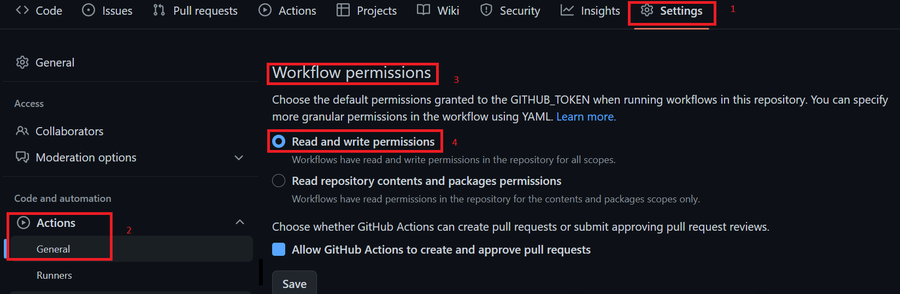

What I’ve learned making an .epub Ebook with Quarto
I’ve been working on an ebook (that you can read over here) made using Quarto. Since I’m also selling a DRM-free Epub and PDF on Leanpub I wanted to share some tips and tricks I’ve learned to generate an Epub that passes epubcheck using Quarto.
Quarto is a tool made by Posit and is an open-source scientific and technical publishing tool. If you know what LaTeX is, then it should be easy for you to grok Quarto. The idea of Quarto is that you write documents using Markdown, and then compile these source files into either PDFs, Word documents, but also books, web-sites, ebooks (in the Epub format) and so on… It’s quite powerful, and you can also use programming language code chunks for literate programming. Quarto support R, Python, Julia and ObsevableJS chunks.
So, as I said, I’ve been using Quarto to write an ebook, and from a single set of Markdown source files I can generate the website (linked above), the PDF of the book and the Epub of the book. But you see, if you want to sell an Epub on platforms like Leanpub, the generated Epub must pass epubcheck. epubcheck is a command line application that verifies that your Epub satisfies certain quality checks. If these quality standards are not satisfied, there is no guarantee that Epub readers can successfully open your Epub. Leanpub actually allows you to upload an Epub that does not pass epubcheck, but they warn you that you really should strive for publishing an Epub without any errors or warnings raised by epubcheck. For example, the first version of my Epub did not pass epubcheck and I couldn’t upload it to my Kindle.
In this blog post I’ll show you what you should do to generate an Epub that passes epubcheck using Quarto.
Starting from the default template
Start by installing Quarto by downloading the right package for your operating system here. To start from a book template open a terminal and run:
quarto create-project example_book --type book
Let’s open the _quarto.yml file that is inside the newly created example_book/. This is your book’s configuration file. It should look like this:
project:
type: book
book:
title: "example_book"
author: "Jane Doe"
date: "3/3/2023"
chapters:
- index.qmd
- intro.qmd
- summary.qmd
- references.qmd
bibliography: references.bib
format:
html:
theme: cosmo
pdf:
documentclass: scrreprt
You can change whatever you like, but for our purposes, we are going to add the epub output format all the way at the bottom of the file. So change these lines:
format:
html:
theme: cosmo
pdf:
documentclass: scrreprtinto these lines:
format:
html:
theme: cosmo
epub:
toc: true
I’ve added the epub format as an output, as well as the toc: true option, which builds a table of contents. I’ve also removed the pdf output because you need to have a LaTeX distribution installed for this, and the point of this blog post is not to talk about the PDF output (which works flawlessly by the way). Before compiling, let’s open one of the .qmd files. These files are the Markdown source files that we need to edit in order to fill our book with content. Let’s open intro.qmd and change these lines from:
# Introduction
This is a book created from markdown and executable code.
See @knuth84 for additional discussion of literate programming.to:
# Introduction
This is a book created from markdown and executable code.
See @knuth84 for additional discussion of literate programming.

Download the image from this link and create the images/ folder at the root of the book, right next to the .qmd files.
{kind=link}
This syntax is the default syntax for adding pictures in a Markdown document. If you’re an R user, you could also use an R code chunk and the function knitr::include_graphics() to achieve the same thing.
Let’s compile our little example book, and then use epubcheck to see what’s wrong! Use these commands to render the book in all the formats:
cd example_book/
quarto render
You should see a folder called _book appear on the root of your project. Inside this folder, you will see a bunch of .html files: these constitute the web-site of your book. You can right click on index.html and open it with a web browser and see how your book, as a web-site, looks like. You could host this book on Github pages for free!
But what interests us is the .epub file. If your PDF reader supports this format, you can open it and see how it looks. On Windows you could use SumatraPDF. I use Okular on Linux to open PDF and Epub documents. Anyways, there doesn’t seem to be anything wrong with it. You can open it, you can read it, it seems to be working just fine. But let’s see if epubcheck thinks the same. You can download epubcheck from here. Save the downloaded file on the root directory of the book and decompress it. Inside the decompressed folder, you’ll see a file called epubcheck.jar. Put your epub file right next to it, in the same folder. Now, open a terminal and navigate to the right folder and run the following command to check the epub file:
cd epubcheck-5.0.0 # or whatever version it is you downloaded
java -jar epubcheck.jar example_book.epubYou should see this output:
Validating using EPUB version 3.3 rules.
ERROR(RSC-005): example_book.epub/EPUB/content.opf(6,39): Error while parsing file: character content of element "dc:date" invalid; must
be a string with length at least 1 (actual length was 0)
WARNING(OPF-053): example_book.epub/EPUB/content.opf(6,39): Date value "" does not follow recommended syntax as per http://www.w3.org/TR/NOTE-datetime:zero-length string.
ERROR(RSC-005): example_book.epub/EPUB/text/ch002.xhtml(354,16): Error while parsing file: element "figcaption" not allowed here; expected the element end-tag, text, element "a", "abbr", "area", "audio", "b", "bdi", "bdo", "br", "button", "canvas", "cite", "code", "data", "datalist", "del", "dfn", "em", "embed", "epub:switch", "i", "iframe", "img", "input", "ins", "kbd", "label", "link", "map", "mark", "meta", "meter", "ns1:math", "ns2:svg", "object", "output", "picture", "progress", "q", "ruby", "s", "samp", "script", "select", "small", "span", "strong", "sub", "sup", "template", "textarea", "time", "u", "var", "video" or "wbr" (with xmlns:ns1="http://www.w3.org/1998/Math/MathML" xmlns:ns2="http://www.w3.org/2000/svg") or an element from another namespace
Check finished with errors
Messages: 0 fatals / 2 errors / 1 warning / 0 infos
EPUBCheck completedSo we get 2 errors and 1 warning! Let’s look at the first error:
ERROR(RSC-005): example_book.epub/EPUB/content.opf(6,39): Error while parsing file: character content of element "dc:date" invalid; must
be a string with length at least 1 (actual length was 0)
The first error message states that our epub does not have a valid dc:date attribute. The warning is also related to this. We can correct this by adding this attribute in the _quarto.yml file:
format:
epub:
toc:
true
date:
"2023-03-01"However this is not enough. There is a bug in the current release of Quarto that prevents this from working, even though we did what we should. However, this bug is already corrected in the development version of the next release. But until the next version of Quarto, 1.3, gets released, here is the workaround; you need to also specify the language of the book:
format:
html:
theme: cosmo
epub:
toc:
true
lang:
en-GB
date:
"2023-03-01"
And now epubcheck does not complain about the date anymore!
The next error:
ERROR(RSC-005): example_book.epub/EPUB/text/ch002.xhtml(354,16): Error while parsing file: element "figcaption" not allowed here; expected the element end-tag, text, element "a", "abbr", "area", "audio", "b", "bdi", "bdo", "br", "button", "canvas", "cite", "code", "data", "datalist", "del", "dfn", "em", "embed", "epub:switch", "i", "iframe", "img", "input", "ins", "kbd", "label", "link", "map", "mark", "meta", "meter", "ns1:math", "ns2:svg", "object", "output", "picture", "progress", "q", "ruby", "s", "samp", "script", "select", "small", "span", "strong", "sub", "sup", "template", "textarea", "time", "u", "var", "video" or "wbr" (with xmlns:ns1="http://www.w3.org/1998/Math/MathML" xmlns:ns2="http://www.w3.org/2000/svg") or an element from another namespaceis related to the image. It turns out that including the image like we did generates code that is not quite correct from the point of view of the standard that Epubs should follow. You should know that Epubs are actually a collection of HTML files, so you can include images by using HTML code in the source Markdown files.
If you insert the image like so, the error should disappear:
<figure>
<img src="images/640px-Eyjafjallajokull_Gigjokull_in_ash.jpg"
alt="By Boaworm - Own work, CC BY 3.0, https://commons.wikimedia.org/w/index.php?curid=10649477"></img>
<figcaption>By Boaworm - Own work, CC BY 3.0, https://commons.wikimedia.org/w/index.php?curid=10649477</figcaption>
</figure>
If you re-render the Epub, and try epubcheck again, you should see this:
java -jar epubcheck.jar example_book.epubValidating using EPUB version 3.3 rules.
No errors or warnings detected.
Messages: 0 fatals / 0 errors / 0 warnings / 0 infosUsing Github Actions to build the book
Finally, as a bonus, if you’re using Github, you can also use Github Actions to generate the web-site, as well as the Epub (and the PDF if you want). If you go to this repository, which contains the example book from this post, you can find the workflow to automatically build the Epub and web-site from your Quarto source in the .github/workflows/ folder. Create the same folder structure in your repository and copy the .yml file that is in it to these folders. You should then create a gh-pages branch and make sure that Github Actions has the required permissions to push. For this, go to the Settings menu of your repository, then Actions (listed in the menu on the left), then General, and then under Workflow permissions make sure that Read and write permissions is checked.

Now, each time you push, you should see your Epub get built in the gh-pages branch! If you use R code chunks, you also need to set up an action to set up R. Take a look at the repo of my book for an example.